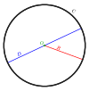

center
abstraction

Source: Wikipedia
Wikipedia Page (Something wrong with this association? Let us know.)
Wikidata Page (Something wrong with this association? Let us know.)
Occurs in:
- drainage-basin_outlet_center__elevation
- drainage-basin_outlet_center__latitude
- drainage-basin_outlet_center__longitude
- channel_entrance_center__elevation
- channel_entrance_center__latitude
- channel_entrance_center__longitude
- channel_exit_center__elevation
- channel_exit_center__latitude
- channel_exit_center__longitude
- river-delta_channel~main_entrance_center__elevation
- river-delta_channel~main_entrance_center__latitude
- river-delta_channel~main_entrance_center__longitude
- river-delta_distributary_outlet_center__elevation
- river-delta_distributary_outlet_center__latitude
- river-delta_distributary_outlet_center__longitude
- model_grid_cell_center__geodetic_latitude
- model_grid_cell_center__latitude
- model_grid_cell_center__longitude
- model_grid_cell_center__x_coordinate
- model_grid_cell_center__y_coordinate
- model_grid_cell_edge_center_water__depth
- model_grid_cell_edge_center__latitude
- model_grid_cell_edge_center__longitude
- model_grid_cell_edge_center__virtual_latitude
- model_grid_cell_edge_center__virtual_longitude
- model_grid_cell_edge_center_water__x_component_of_velocity
- model_grid_cell_edge_center__x_coordinate
- model_grid_cell_edge_center_water__y_component_of_velocity
- model_grid_cell_edge_center__y_coordinate
- model_grid_cell_edge_center_water__z_component_of_velocity
- model_grid_cell_edge_center__z_coordinate
- model_grid_dual-cell_edge_center_water__depth
- model_grid_dual-cell_edge_center__latitude
- model_grid_dual-cell_edge_center__longitude
- model_grid_dual-cell_edge_center__virtual_latitude
- model_grid_dual-cell_edge_center__virtual_longitude
- model_grid_dual-cell_edge_center_water__x_component_of_velocity
- model_grid_dual-cell_edge_center__x_coordinate
- model_grid_dual-cell_edge_center_water__y_component_of_velocity
- model_grid_dual-cell_edge_center__y_coordinate
- model_grid_dual-cell_edge_center_water__z_component_of_velocity
- model_grid_dual-cell_edge_center__z_coordinate
- model_grid_primary-cell_edge_center_water__depth
- model_grid_primary-cell_edge_center__latitude
- model_grid_primary-cell_edge_center__longitude
- model_grid_primary-cell_edge_center__virtual_latitude
- model_grid_primary-cell_edge_center__virtual_longitude
- model_grid_primary-cell_edge_center_water__x_component_of_velocity
- model_grid_primary-cell_edge_center__x_coordinate
- model_grid_primary-cell_edge_center_water__y_component_of_velocity
- model_grid_primary-cell_edge_center__y_coordinate
- model_grid_primary-cell_edge_center_water__z_component_of_velocity
- model_grid_primary-cell_edge_center__z_coordinate